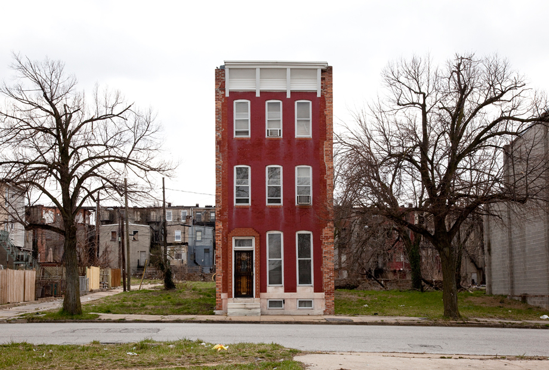

![]()
Over the past year, I’ve helped to start the Preservation Rightsizing Network to bring greater attention to the intersecting issues of historic preservation and “rightsizing” in cities like Baltimore. My participation in this project has sparked my interested in digging into the history of how vacant properties have been discussed and managed in Baltimore throughout our city’s history.

Initial research turned up a report from 1994 highlighting an initiative (“never tried before on a citywide scale in Baltimore”) by Mayor Kurt Schmoke to restore or raze vacant rowhouses. Digging back a bit earlier, I found discussion under Mayor Theodore McKeldin who sought and received a new local ordinance allowing the city to demolish houses after they had been “boarded” for ninety days or more. McKeldin tied vacant houses to public health and safety, remarking in 1964:
“Vacant houses not only have a blighting effect on the areas around them but they are also an open invitation to vandals and a potential hazard for children who attempt to play within such buildings.”
I was unsurprised to find these connections back to post-WWII urban renewal efforts but I am even more intrigued by the intense debate around vacancy that took place over fifty years before in the summer of 1910.
On August 21, 1910, the Baltimore Police Board Published a “complete census” to count all of the city’s vacant and occupied dwellings. A member of the prominent local real estate firm William Martien & Company had suggested the survey to the Secretary of the board, reportedly, “As a result of the agitation over the number of vacant houses.” The census found that the Northwestern district led the city with over 1,300 vacant dwellings. Realtor James Cary Martien pointed to the city’s rapid suburban growth and the aging core as the cause, remarking:
“The number of vacant houses in the city is due both to the many dwellings being built in the suburbs and the dilapidated condition of many in Baltimore”
In the weeks that followed the publication of the report, a series of letters to the Sun expanded on Martien’s summary and tied the issue to the fights over “negro invasion” and the aggressive efforts by some white elected officials and property-owners to enforce racial segregation in residential neighborhoods.
When some residents argued that high taxes brought on vacant and abandoned houses, one northwest Baltimore resident wrote back under the name “Pure White” in a letter published on August 27 —
“Taxes may, and I presume do, have something to do with it; for our taxes are inordinately and unnecessarily high, but the possibility, and indeed the probability, of the negro neighbor is the main reason…
When a man works and saves and buys a home thinking it will be his shelter in his old age, and wakes up some morning to find he has a negro neighbor, he feels hurt and aggrieved that he has to give up his home, but he moves… I know of three families who want to buy a home this fall and they prefer the city to the suburbs, but they are hesitating because of this disagreeable possibility. We of the northwestern section have enough to bear in our close proximity to their noisy and disagreeable alleys, and we don’t want them next door to us. The real estate men—a few of them, not all—are to blame for the vacant houses and with them, lies the remedy.”
On September 2, 1910, another local echoed this sentiment and signed their letter “Justice” in a call for the city to protect him from the possibility of black neighbors —
“The writer has been living for nearly half a century in a neighborhood now threatened with negro invasion. There are several vacant houses in the block, and this fear may be the potent cause of non-rental or sale. Each vacant house is a standing menace to the rest. We live in daily dread that we may be driven out and forced to sell at a depreciated price if we can sell at all.”
On September 15, 1910, another letter recognized the alarming “negro invasion” but still gave priority to the threat of high taxes —
“The vacant house problem in the city should be one of grave concern at this time to our municipal administrators, to our real estate agents and to those having the welfare of the city at heart.
It is not a temporary but a growing evil that is confronting and threatening every owner of property. The number of vacant houses has grown and grown until at last there is common alarm in the matter, and justly so. What then are the causes producing this condition? There are many, but the fundamental one is purely economic—high taxes.
There are other contributing causes, but high taxes are essentially at the root of this ever dangerously increasing trouble. Negro invasion into heretofore white residential neighborhoods is undoubtedly aggravating the situation, and the alarm at such invasion is becoming more and more evidenced by the strained and tense feeling of the people residing in such invaded neighborhoods.”
I’m hoping to put a bit more time into this research over the next month and give these letters the context they deserve. Check out Garrett Power’s excellent 1983 history of the city’s residential racial segregation ordinances in the early 1910s for some excellent background.
Sources: All of the letters are from the Baltimore Sun through the ProQuest Historical Newspapers database - I’ll come back and add full citations sometime this week.
Reuse
Citation
@online{pousson2014,
author = {Pousson, Eli},
title = {“{Each} Vacant House Is a Standing Menace to the Rest.”},
date = {2014-07-21},
url = {https://elipousson.github.io/posts/2014-07-21-each-vacant-house-is-a-standing-menace-to-the-rest},
langid = {en}
}